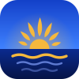

Road to Bangsaen
Bangsaen Marathon · 15 Nov 2026
W04
Same easy run · 3 weeks apart
153bpmwas 168
Slower runners passed me. I finished calm, with fuel in the tank.
7:30/km — 59 sec/km slower than three weeks ago.
Week 4 of 11 · 52 days to goSub-4:00 · Attempt #3